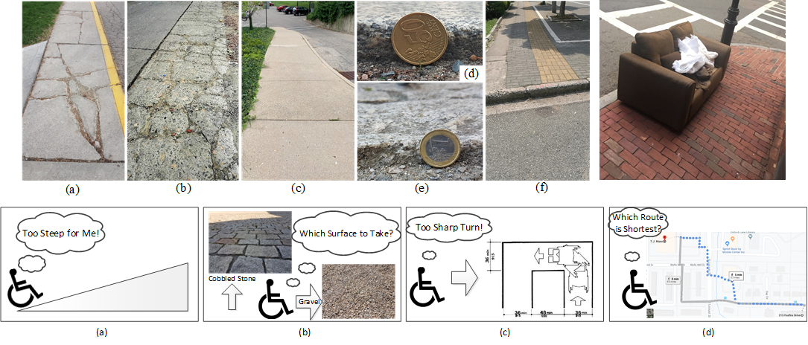
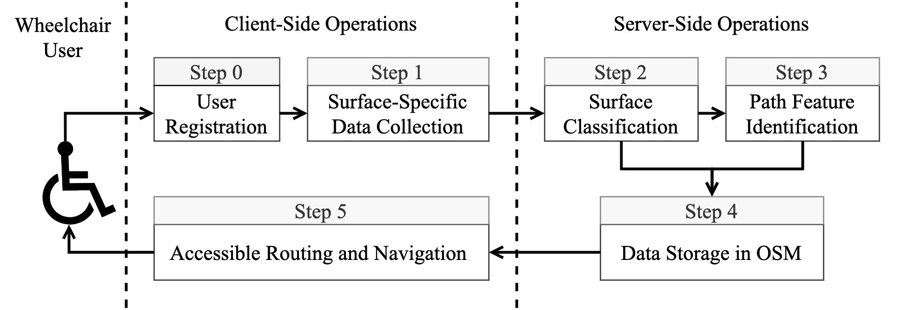
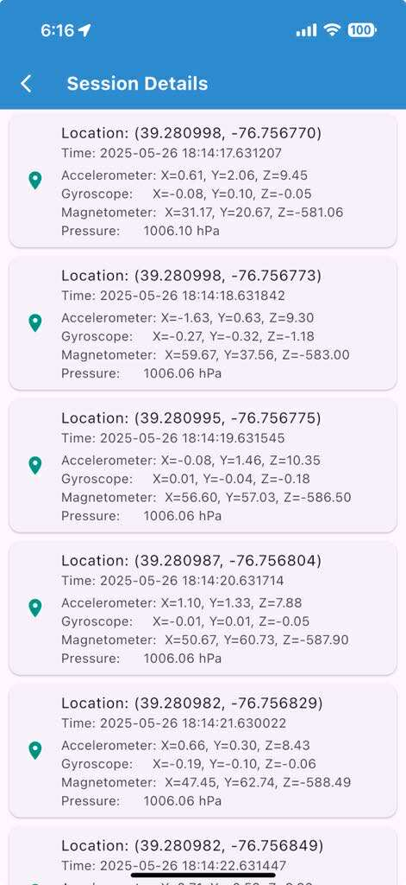
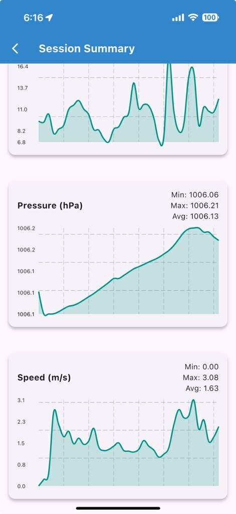

Accessible Navigation for Wheelchair Users, Powered by AI
MyPath is an AI-powered accessible navigation system that provides personalized, barrier-aware routes for wheelchair users using geospatial data fusion and language models.
Our Vision
MyPath's vision is to provide users with customized paths between destinations. The paths are ideally customized by taking the user's personal information into account. This allows the route provided to avoid certain barriers (i.e. fallen trees for users that may not be able to go over or around them), include specific facilities (i.e. curb cuts for wheelchair users), and avoid unsafe conditions (i.e. terrain that may be difficult for some users to physically navigate). MyPath hopes to crowdsource information to allow for a better algorithm and more real-time updates, allowing users more independence than they may have had in the past.

The Bigger Picture
We introduce the MyPath accessible routing system for wheelchair users which works by crowd-sourced surface vibration data collected by wheelchair users in an unobtrusive manner through the MyPath app. Our MyPath app is an accessible app by itself and is thoroughly verified by a team of wheelchair users, blind and low vision (BLV) users, and rehabilitation and mobility experts. The app has both Android and iOS versions and is tested for many hours for correct functioning. The MyPath system consists of three interconnected modules - data collection, ML-based surface classification, and accessible route generation.

Functionally, the operations of the system are divided into a training phase and a live phase. In the training phase, experiments are conducted both indoors and outdoors for curbs, flat paths, and other common surface types. The surface type and slope data are used for classification model training. The live phase consists of an unobtrusive, participatory crowd-sensing technique to collect location-tagged path information from urban areas in order to identify accessible features and recommend personalized routes in the built environment. In the training phase, a registered wheelchair user can contribute to data collection (step 0 and step 1) using a smartphone (Android or iOS) embedded with motion sensors. Collected data is subject to a surface classification operation in the central server using machine learning (step 2). Once data is accumulated from the user’s surroundings, the graphical overlay map is constructed with important path features (step 3) which helps to generate accessible routes (step 4) based on user-initiated queries (step 5). The accessible route query and response for the user can take place during the testing phase with enough data to populate the server.
AccessMyPath App
Download the AccessMyPath mobile app to navigate your city with personalized, barrier-aware routing designed for wheelchair users. Contribute crowdsourced surface data and help build a more accessible world.
- Barrier-aware route planning
- Real-time crowdsourced surface data
- Personalized accessibility preferences
- Report and map accessibility barriers



MyPath Mobile App Tutorial
Learn How to Use MyPath
Watch this comprehensive tutorial to learn how to use the MyPath mobile application effectively. Discover all the features, navigation options, and accessibility tools that make your journey easier.
- Finding barrier-aware routes
- Setting up your accessibility preferences
- Reporting accessibility issues